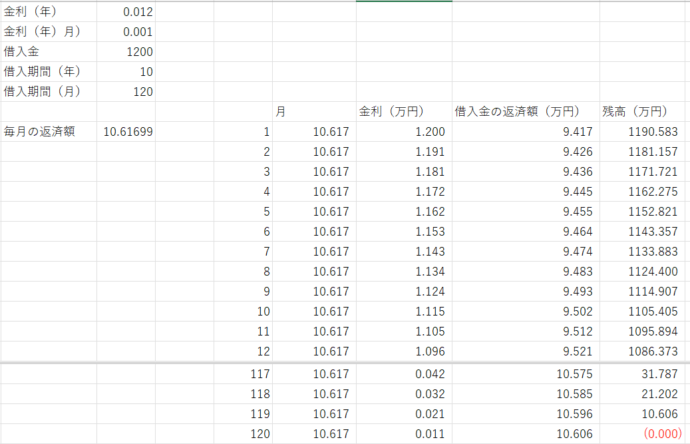

ローン計算-02
・元利均等
これは，結構計算がややこしいです．
毎月の返済額が一定＝借入金の返済額+金利
を計算しなければならないからです．
前ページと同様に，
・金利
一般的には年の金利が表示されていますが，一般的には毎月返却することになるので年金利の1/12の月ごとの金利が計算には使われます．
とりあえず，簡単に，
金利（年）：ｋ
金利（月）：ｘ (=k/12)
としましょう．
・返済期間
これも一般的には，何年？，を指しますが，これも月ごとの計算なので，
返済期間（年）：y
返済期間（月）：ｍ (=year/12)
としましょう．
また，計算を簡単にするために，
ボーナス払いは考慮しない
金利の変更も考慮しない
とします．
・返済金額
毎月の返済金額を，W，とします．
，
・元利均等
毎月の返済額は，W，となります．
一ヶ月目
最初の返済時の金利は，借入金×金利（月）となるので，
\( \Large s \cdot x \)
となります．したがって，一ヶ月目の返済額は，
\( \Large W - s \cdot x \)
となります．したがって，一ヶ月目の残金は，
\( \Large s- (W - s \cdot x) \)
となります．
二ヶ月目
返済額は，Wですが，金利はすでに一ヶ月目に上記の額を返済しているので少し借入金が減っているので，
\( \Large \left[s- (W - s \cdot x) \right] \cdot x \)
となり，二ヶ月目の返済額は，
\( \Large W - \left[s- (W - s \cdot x) \right] \cdot x = ( 1+x ) ( W-s \cdot x) \)
となり，二ヶ月目の残金は，
\( \Large s- (W - s \cdot x) - ( 1+x ) ( W-s \cdot x) = s - ( 2+x ) ( W-s \cdot x)\)
となります．
三ヶ月目
返済額は，Wですが，金利はすでににヶ月目に上記の額を返済しているので少し借入金が減っているので，
\( \Large \left[s- (2+x)(W - s \cdot x) \right] \cdot x \)
となり，二ヶ月目の返済額は，
\( \begin{eqnarray} \Large W - \left[s- (2+x)(W - s \cdot x) \right] \cdot x &=& W - s \cdot x + (2+x)(W - s \cdot x)x \\
&=& (W - s \cdot x) [1 + (2+x)x] \\
&=& (W - s \cdot x) [1 + 2x+x^2] \\
&=& (W - s \cdot x) (1 + x)^2 \\
\end{eqnarray} \)
とあるていど簡単になり，三ヶ月目の残金は，
\( \Large s - ( 2+x ) ( W-s \cdot x) - (W - s \cdot x) (1 + x)^2 = s-(W - s \cdot x)(x^2 + 3x+3)\)
とちょっと複雑になります．
四ヶ月目
返済額は，Wですが，金利はすでににヶ月目に上記の額を返済しているので少し借入金が減っているので，
\( \Large \left[s- (W - s \cdot x) (x^2 + 3x+3)\right] \cdot x \)
となり，四ヶ月目の返済額は，
\( \begin{eqnarray} \Large W - \left[s- (W - s \cdot x)(x^2 + 3x+3) \right] \cdot x &=& W - s \cdot x + (W - s \cdot x)(x^2 + 3x+3)x \\
&=& (W - s \cdot x) [1 + (x^2 + 3x+3)x] \\
&=& (W - s \cdot x) [x^3 + 3x^2 +3x+1] \\
&=& (W - s \cdot x) (1 + x)^3 \\
\end{eqnarray} \)
とある法則性を示します．
つまり，iヶ月後の月の返済額は，
\( \Large (W - s \cdot x) (1 + x)^{i-1} \)
と簡単になるのです．これをｎ回繰り返した総額が借入金，ｓ，となるのです．したがって，
\( \Large \displaystyle \sum_{i=1}^m (W - s \cdot x) (1 + x)^{i-1} = (W - s \cdot x) \displaystyle \sum_{i=1}^m (1 + x)^{i-1}\)
を計算することになります，この計算は，等比数列の和でお馴染みですよね．
\( \Large Y = \displaystyle \sum_{i=1}^m (1 + x)^{i-1} = 1 + (1+x) + (1+x)^2+.......(1+x)^{m-1} \)
とすれば，
\( \Large (1+x)Y = (1+x) + (1+x)^2+.......(1+x)^{m} \)
となり，差分を取れば，
\( \Large (1+x)Y-Y = (1+x)^{m}-1 \)
\( \Large Y= \frac{(1+x)^{m}-1}{x} \)
\( \Large \displaystyle s= (W - s \cdot x) \frac{(1+x)^{m}-1}{x} \)
\( \Large \displaystyle W - s \cdot x = \frac{sx}{(1+x)^{m}-1} \)
\( \begin{eqnarray} \Large \displaystyle W &=& s \cdot x + \frac{sx}{(1+x)^{m}-1} \\
&=& sx \left[ 1+\frac{1}{(1+x)^{m}-1} \right] \\
&=& sx \left[ \frac{(1+x)^m}{(1+x)^{m}-1} \right] \\
&=& \frac{sx}{1-(1+x)^{-m}} \\
\end{eqnarray} \)
ときれいになり，毎月の返済額，W，を計算することができます．
残金は，
１ ： \( \Large s- (W - s \cdot x) \)
２ ： \( \Large s- (W - s \cdot x) - ( 1+x ) ( W-s \cdot x)\)
３ ： \( \Large s- (W - s \cdot x) - ( 1+x ) ( W-s \cdot x) - ( 1+x )^2 ( W-s \cdot x)\)
となるので，
nヶ月 ： \( \Large s-(W - s \cdot x)\displaystyle \sum_{i=1}^n ( 1+x )^{i-1} \)
となるので，上と同様の等比数列の計算から，
nヶ月 ： \( \Large s-(W - s \cdot x) \frac{( 1+x )^{n}-1}{x} \)
となります．Wは，
\( \Large W = \frac{sx}{1-(1+x)^{-m}} \)
ですので，Wを消すために，W-sxを計算すると，
\(\begin{eqnarray} \Large && W-sx \\
&=& sx \left[ \frac{sx}{1-(1+x)^{-m}}-1 \right] \\
&=&
sx \frac{1-1+(1+x)^{-m}}{1-(1+x)^{-m}} \\
&=&
sx \frac{(1+x)^{-m}}{1-(1+x)^{-m}} \\
&=&
sx \frac{1}{(1+x)^{m}-1} \\
\end{eqnarray} \)
となるので，
nヶ月 ： \(\begin{eqnarray} \Large && s-sx \frac{1}{(1+x)^{m}-1} \frac{( 1+x )^{n}-1}{x} \\
&=& s
\frac{(1+x)^{m}-1-( 1+x )^{n}+1}{(1+x)^{m}-1} \\
&=& s
\frac{(1+x)^{m}-( 1+x )^{n}}{(1+x)^{m}-1} \\
\end{eqnarray} \)
となります．
金利は，
１ ： \( \Large sx \)
２ ： \( \Large sx- (W - s \cdot x)x \)
３ ： \( \Large sx- (W - s \cdot x) [ 1+ ( 1+x )] x \)
となるので，
nヶ月 ： \( \Large sx-(W - s \cdot x)x \displaystyle \sum_{i=1}^{n-1} ( 1+x )^{i-1} \)
となるので（n-1，までがポイント），上と同様の等比数列の計算から，
nヶ月 ： \( \Large sx-(W - s \cdot x) [( 1+x )^{n-1}-1] \)
となります．Wを消すと，
nヶ月 ： \( \begin{eqnarray} && \Large sx-(W - s \cdot x) [( 1+x )^{n-1}-1]
\\
&=&
sx-sx \frac{( 1+x )^{n-1}-1}{(1+x)^{m}-1} \\
&=& sx \left[ 1-
\frac{( 1+x )^{n-1}-1}{(1+x)^{m}-1} \right] \\
&=& sx
\frac{ [(1+x)^{m}-1]-[( 1+x )^{n-1}-1]}{(1+x)^{m}-1} \\
&=& sx
\frac{ (1+x)^{m}-( 1+x )^{n-1}}{(1+x)^{m}-1} \\
\end{eqnarray} \)
と，ｎヶ月目の金利を計算することができます．
実際の計算
実査に計算してみましょう．
金利（年）：1.2％ (=0.1%/month)
借入金：1200万円
期間（年）：10年 (=120ヶ月）
として計算してみると，
W=10.61699 万円，となりました．

こちら，で計算した結果と一致します．
また，エクセル自体に元利均等の計算関数，PMTがあり，
-PMT(金利（月），期間（月），借入金）
で計算した値と一致しました．